Part C：专题内容方块 — 付费/商业化
按周次聚合同一主题在不同周报中的原文、原图与 mkk 评语。
C4. 付费结构 & 1 元党
追踪范围：W1 → W80 | 当前状态：持续跟踪中
W1 原文（2024.07.18-07.24 首周）
小R占比高，77%的付费用户仅充1元、20%不足 ¥100；5300人充值大于 ¥500，贡献44%的流水
- 反映出用户付费能力偏低，头部资源吸引力不足
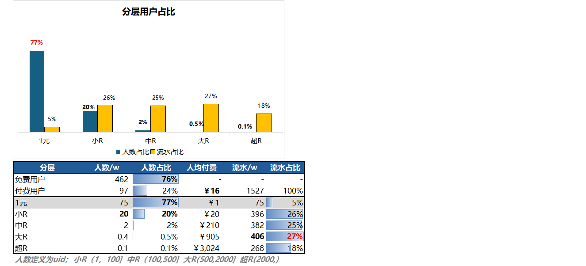
收入占比：从心钻消耗来看，卡池贡献68%（¥1209w）、月卡 ¥300w、直售 ¥254w
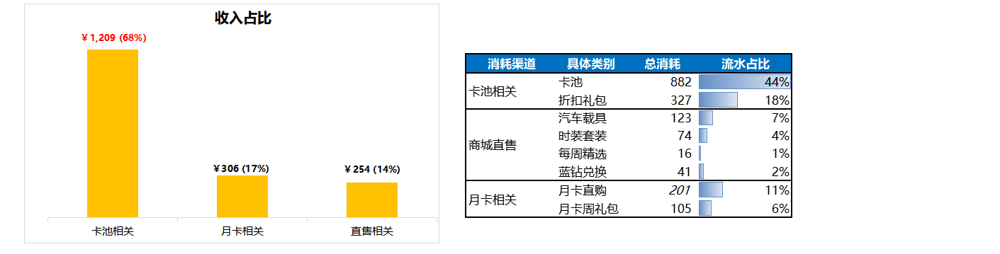
商城销量明细（一级货币心钻）：
- 载具中，奶咖色和金色销量较好，占直售收入的32%；
- 上线推出的4套时装中，庄园千金裙子销量显著更好，占直售收入的26%、4套时装收入的75%。反映玩家对直售商品强烈的价格敏感（¥98和¥58定价的时装销量差10倍）和对裙子的偏好
- 6元折扣礼包，销售额一般共15w，占直售收入的7%；虽然购买人数（近2w）是各商品最多，但也仅占全量付费玩家的2%、小R玩家的10%，未起到拉动小R付费的目的
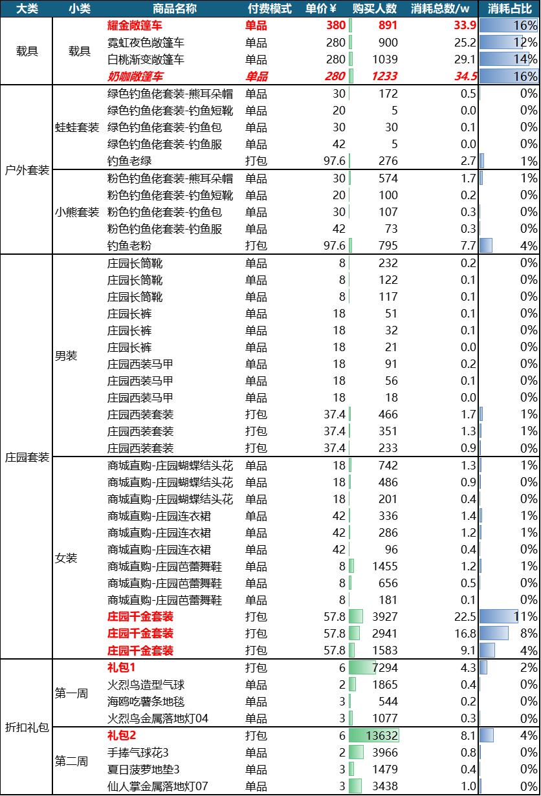
商城销量明细（二级货币）：蓝钻有免费投放，因而折算人民币（¥5348w）远大于流水：
- 销量和购买人数上，服装>家具>建材，且家具和建材中展示顺序和价格的影响因素更大
- 服装中，女装远大于男装，与卡池风格更贴近的销量表现更好，夜空lo裙、芭蕾舞裙销量断崖领先
- 但整体而言，蓝钻仅贡献41w直接收入（心钻兑换），对总流水影响较小
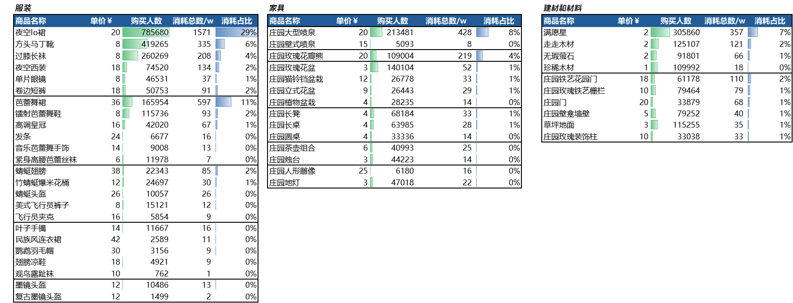
卡池消耗：卡池消耗大头为女装（68%）>家具(16%~19%)>男装（16%）
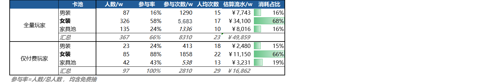
总体出货率较良心，免费玩家8%能在女装池出货，中R近一半能出货。（分母是DAU）
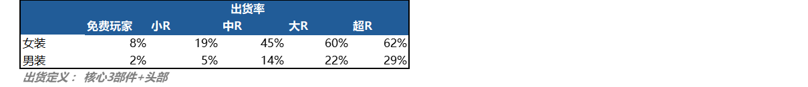
📎 原文：首周周报
📌 mkk 评语
从第一周就暴露了"高付费率、低付费深度"的结构性问题——77% 的付费用户仅充 1 元。ARPPU ¥43 说明愿意花钱的人花得不多，5300 个 ¥500+ 用户贡献了 44% 流水，依赖度极高。
卡池是绝对的流水主力（68%），且性别偏好极端：女装池消耗 63-68%，男装池完全没有吸引力（参与率 <40%）。直售中载具品类（占 48%）远好于服装（26%），且价格敏感度极高（¥98 vs ¥58 销量差 10 倍）。6 元礼包本意拉小 R 付费，但仅覆盖 2% 付费用户，未达目的。
这些首周发现为后续所有付费策略分析提供了基线。
W38 原文 — 小额付费密集期
近期小额付费项密集，日付费率连续三周在 6% 的历史高位（仅次于开服），日ARPU ¥3.7 新高。月卡，周卡&周礼包流水：3.20-4.06，月周卡，周礼包和直购蓝钻总流水 ¥730w；月卡占比 40%，周卡 18%，直购+周礼包 42%。月卡，周卡&周礼包流水周流水 ¥285w，相比春节蓝钻卡池周流水 ¥195w 上升 46%。

📎 原文：第三十八周周报
📌 mkk: 三周日付费率6%是「小额高频」策略的胜利——不放回卡池、小蓝、BP、周卡多项叠加后，ARPU创新高的同时付费门槛大幅降低。月卡占比40%仍是锚定收入，但直购+周礼包42%的占比说明冲动型小额消费已成主力，这种结构的可持续性值得关注。
W56 原文 — 付费分层回落
付费数据正常回落。收入占比（心钻口径）：69%周流水来源于卡池余量。
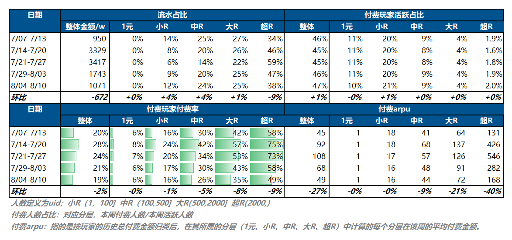
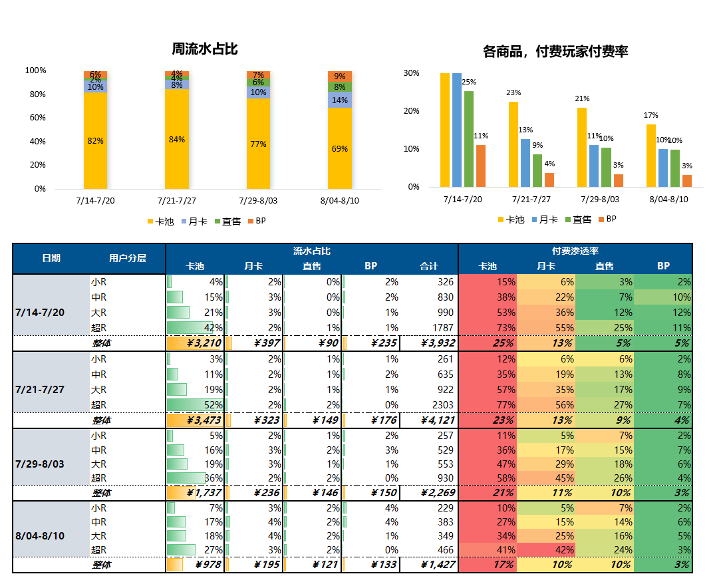
📎 原文：第五十六周周报
📌 mkk: 暑期高峰后的自然衰退，卡池余量仍贡献近七成流水，说明暑期卡池吸引力有较长尾效应。
W80 原文 — 国服流水疲软拆因
近期小镇国服流水疲软，尤其是12月以来日均arpu明显下降。
流水降低拆分付费项：
1. 大卡池流水比前3期平均少了1304w￥流水，可能原因：美术风格；卡池档期没有节假日，基础活跃降低
2. 不放回少了680w￥流水，可能原因：冰雪主题重复，缺乏新意；圣诞和海外上线后送抽，对玩家让利
3. BP自25.3月以来首次断档，近4周没有BP流水入账，少了约800w￥流水
4. 11月底甄嬛联动不及黄油小熊，12月底圣诞节直售流水不高，后续没有新的联动/商城直售项目
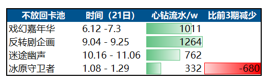
📎 原文：第八十周周报
📌 mkk: 这是W71-W80阶段最有价值的诊断——四项合计少了约¥3,784w/月的流水，几乎是正常水平的一半。根因拆解清晰：大卡池美术风格+冰雪重复导致吸引力衰退（¥1,984w）；BP断档暴露了内容排期的空白（¥800w）；甄嬛联动商业化不及预期+无新直售项目（¥1,000w+）。不是单一问题而是全面的内容真空期。
C1. BP（潮流季通行证）全景
追踪范围：W4 → W81 | 当前状态：持续跟踪中
W4 原文（2024.08.05-08.11）
收入占比：从心钻消耗来看，卡池贡献43%（￥1407w）；月卡￥433w；直售贡献31％，收入￥1011w（+123％）
分R来看，小R流水中（卡池18%（-28％）、月卡24%（-16％）、直售46%（+32％）、BP12％）、中R以上卡池占比63%（-14％）、直售占比21%（+3％）
分R用户付费渗透率：本周，付费渗透率最高的付费项从 卡池 转移到 直售，其中，直售小R付费渗透率平均提升8％，中大超R付费渗透率平均提升27％
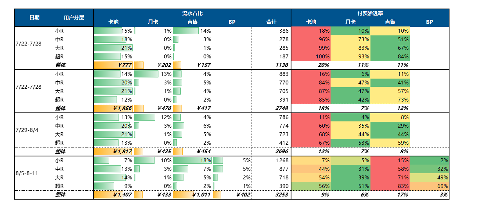
七夕和BP分R售卖情况
BP：￥405w，9.2w人付款；其中普通￥184w（6.1w人），高级￥213w（3.1w人），购买bp等级￥8.5w（0.3w人）；从付费渗透率来看，高级BP在大、超R中付费比例较高，而低级BP在中、小R市场中更受欢迎。
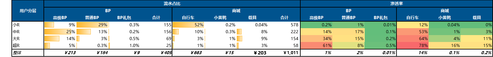
📎 原文：第四周周报
W14 原文（2024.10.14-10.20）
整体概况：周末两天，本次BP购买界面触达102w人，购买普通BP 8w人，高级BP 6w人。BP购买界面触达率37%，普通BP购买率3%，高级BP购买率2%，BP总购买率5%，总流水￥613w
本期BP售卖好于沙滩潮流季BP，但当日流水不如沙滩潮流季。原因是沙滩潮流季当日还上新了载具自行车，流水很高
用户回流情况：本期潮流季对用户回流拉动明显，周六当日相比日常周末7日回流用户增加10w人
分R数据对比：上线前两日，本期奇灵夜潮流季BP渗透率，在各层级均高于沙滩潮流季BP
小R流水占比从13%→32%
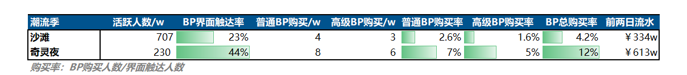
📎 原文：第十四周周报
W15 原文（2024.10.21-10.27）
本期BP衰减较快，首周￥613w → 次周￥210w（沙滩同期￥402w → ￥312w）
截止10.27日，BP发售9日数据对比，奇灵夜潮流季BP在购买界面触达率和触达后购买率均显著高于沙滩潮流季。但总活跃人数较少，因此流水逐渐被沙滩潮流季追平
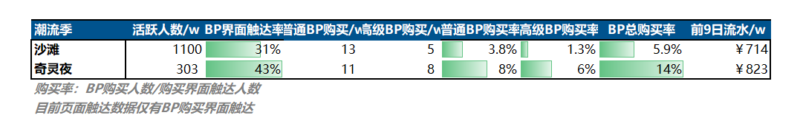
📎 原文：第十五周周报
W28-29 原文 — 国风BP（第三期）上线
前7日流水 ¥578w（-25%），推测下降原因是触达率仅 29%（-14pp）。
上线 9 日，活跃玩家中 61%（+2pp vs 奇灵夜）有过国风 BP 等级提升；但 21-30 级用户占比仅 13%（-6pp），升级速度比奇灵夜稍慢。
BP 贡献流水约 ¥620w，占春节三周总流水约 9%。
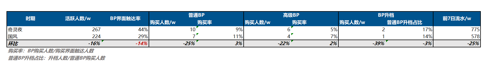
📎 原文：第二十八&九周周报
📌 mkk 评语
BP 是目前验证最成功的"泛用户付费"工具——既能拉新付费用户（小R 占比翻倍），又能带动回流（周六回流多 10w）。但续航高度依赖主题时效性：灵奇夜首周 ¥613w 但次周仅 ¥210w(-66%)，万圣节热度窗口窄是主因，而沙滩季同期仅衰减 22%。选题需匹配更长热度窗口。国风BP是第三期数据，触达率持续下降（37%→29%）是核心瓶颈。
W34 原文 — BP未参与玩家及原因
BP上线4周，有146w玩家未参与BP，占比 43%。未参与BP的玩家中，有95w玩家BP未解锁（等级7级并且完成任务）；有51w玩家解锁但未参加，这部分玩家的BP页签触达率也很低。未解锁BP的玩家中，60%是春节期间新进玩家(57w)，40%是回流玩家。除去未解锁玩家的数据后，解锁BP但未参与的玩家占比 21%。这部分玩家春节期间总活跃时长仅 1h，金币消耗，社交，和付费数据均较低，为泛用户。
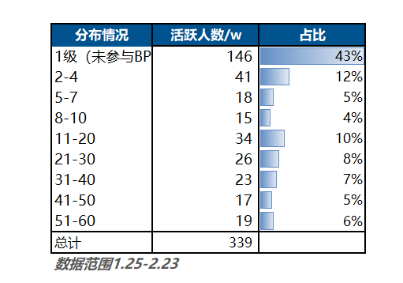
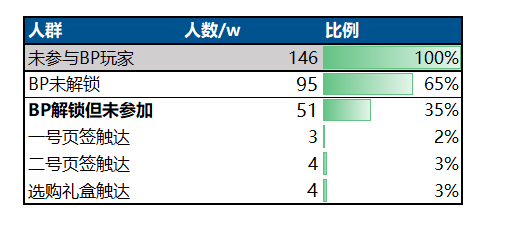
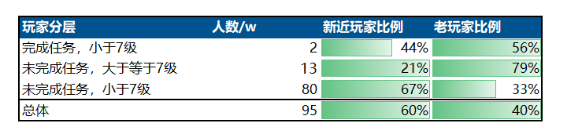
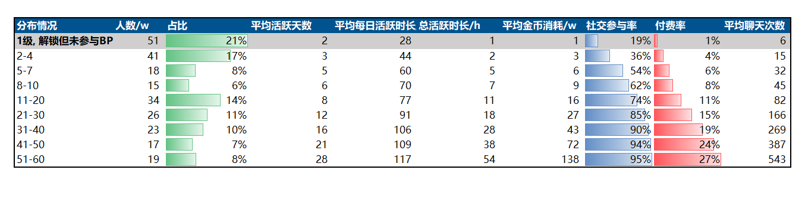
📎 原文：第三十四周周报
📌 mkk: 核心问题不是"不愿买"而是"看不到"——95w未解锁+页签触达率低，说明BP对新手和回流用户的可见性严重不足。解锁但不参与的21%是典型泛用户，靠BP本身难以撬动，优化方向应聚焦于降低解锁门槛和提升页签触达。
W38 原文 — 春野令BP
本期BP新增机制（满活跃返心钻），购买率 9.3% 为新高。增加购买界面露出，该界面触达率升至 48%（+12pp），但仍有提升空间。本期BP叠加假期，上线后活跃提升13%、时长提升40%。
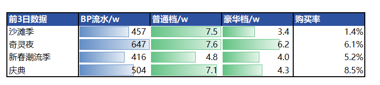
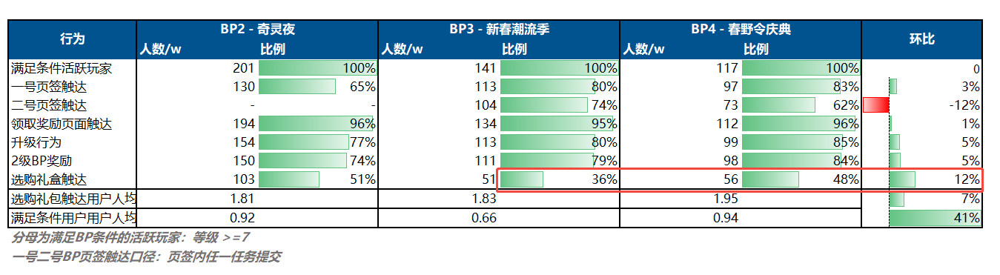

📎 原文：第三十八周周报
📌 mkk: "满活跃返心钻"直接将BP与活跃绑定，购买率从此前低点拉到9.3%新高，验证了「让玩家觉得买了能用完」的价值。触达率48%仍有一半玩家没看到入口，这与W34诊断的可见性问题一脉相承。活跃和时长提升需后续剥离假期因素才能归因。
W39 原文 — 春野令BP（前9日）
本期BP新增机制（满活跃返心钻），购买率 7.8%，流水656w，仅次于奇灵夜。
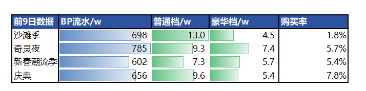
📎 原文：第三十九周周报
📌 mkk: 9日购买率7.8%低于首周的9.3%属正常衰减，总流水¥656w仅次于奇灵夜说明该BP在历史横向对比中表现上乘。"满活跃返心钻"机制已验证有效，建议后续BP固化此机制。
W44 原文 — 稚趣园庆典BP
稚趣园BP前3日流水 422w（-16%），普通档位 6w 人，豪华档位共 3.5w 人；购买率 7.2%（-1.3pp）。原因猜测：1.上期庆典首次送钻送抽卡券，新奇效应 2.上期同时上架了大卡池，玩家对抽卡券需求更大
本期庆典投放免费福利，引导玩家点击首页icon，使得选购界面触达率提升至69%（+28%）
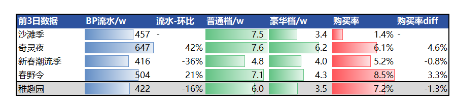
📎 原文：第四十四周周报
📌 mkk: 触达率大幅提升但转化下滑，说明"看到但不买"——免费福利引流有效但无法替代付费动机本身。首期BP的新奇红利消退是结构性问题。
W45 原文 — 稚趣园庆典BP（前9日）
稚趣园BP前9日流水 531w（-19%），普通档位 7.7w 人，豪华档位共 4.3w 人；购买率 7.0%（-0.8pp）尚可，主要是豪华档购买人数减少
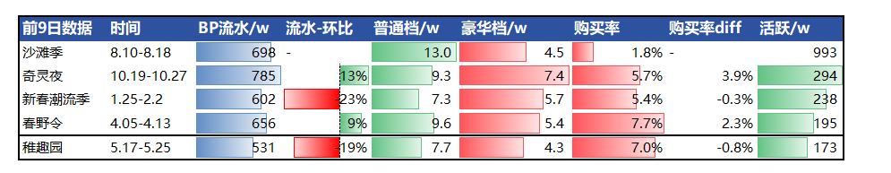
📎 原文：第四十五周周报
📌 mkk: 前9日vs前3日的增量有限（531-422=109w追加），后程购买力衰减明显。豪华档流失说明高价值内容的感知吸引力不够，需要关注BP内容品质。
W51 原文 — 动物潮流季BP
7.5日上线动物潮流季，前3日流水 668w（环比稚趣园前3日 +58%），超越奇灵夜为历史新高。购买率 8.6% 历史新高，付费ARPU为 ￥46 稍高于前两期。豪华版购买率从2.7% → 3.9%（+0.9%），豪华版BP贡献共 417w 流水。本期BP的选购界面触达率 68%，持平上期稚趣园。本期BP上线对活跃拉动明显。其中回流用户占活跃用户的 29%，日均时长提升约 40%
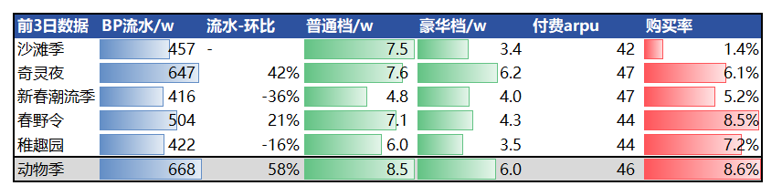
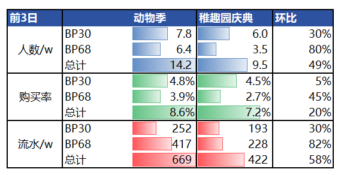
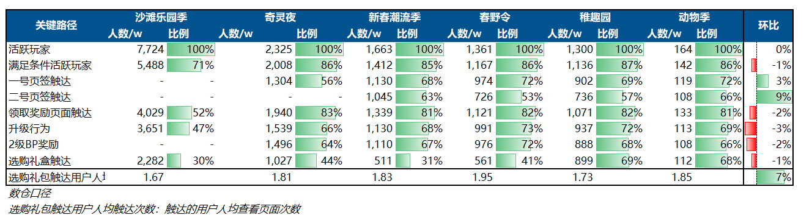
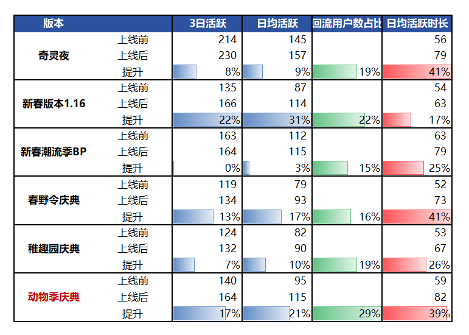
📎 原文：第五十一周周报
📌 mkk: 动物季BP创造了三个历史新高（流水/购买率/豪华版购买率），核心驱动力是动物主题的情感共鸣+版本大更新的回流效应。豪华版购买率大幅提升（+0.9%）是重要信号——说明高价值内容的差异化定价策略有效，用户愿意为更好的内容买单。
W52 原文 — 动物潮流季BP（前9日）
7.5日上线动物潮流季，前9日流水 864w；购买率 7.7% 历史新高，付费ARPU为 ￥46
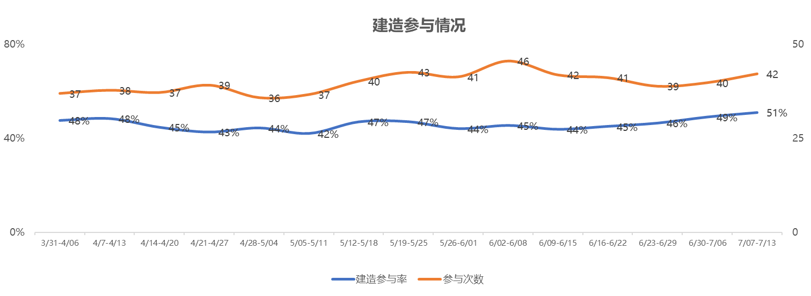
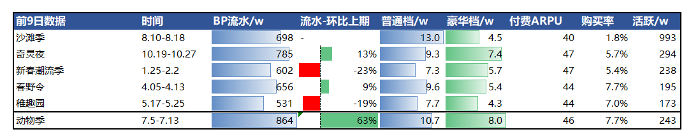
📎 原文：第五十二周周报
📌 mkk: 前9日vs前3日追加196w（864-668），后程转化尚可但增速放缓。购买率从前3日8.6%回落至前9日7.7%，说明后程新增付费者的边际贡献在下降。
W57 原文 — 引星河庆典BP
引星河庆典前3日流水较高¥597w，相比动物季周年庆稍有下降。主要是豪华版68档位购买人数下降。引星河BP前端触达率稍高于动物季。
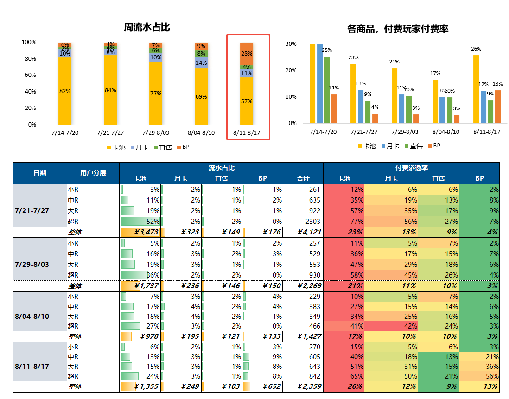
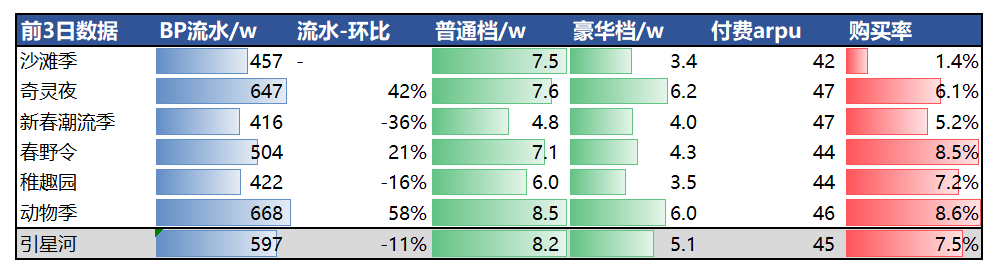
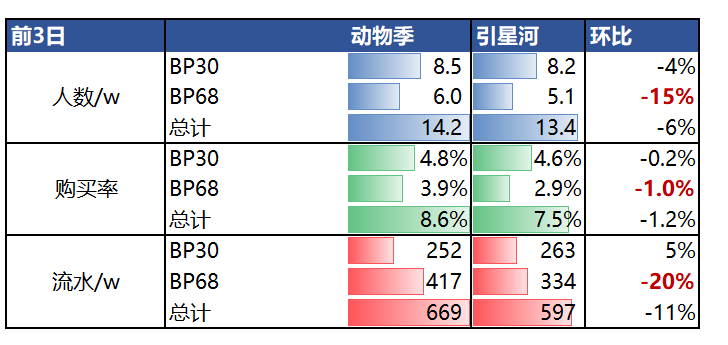
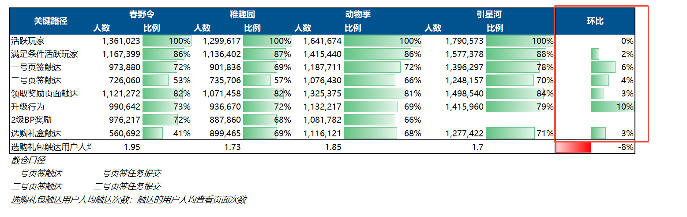
📎 原文：第五十七周周报
📌 mkk: 触达率略升但转化不足，豪华档购买下降是核心问题——可能反映高档位性价比认知变化，或暑期尾声用户消费意愿收敛。
W58 原文 — 引星河BP前9日
BP数据更新至前9日，流水¥768w，售卖持续性较好，仅次于动物季和奇灵夜。相比于动物季，主要是豪华档购买人数减少。
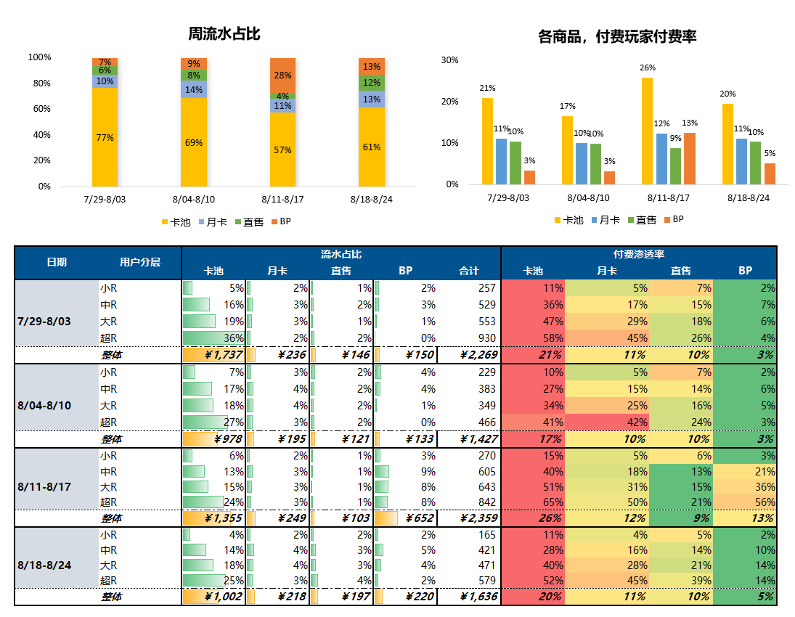
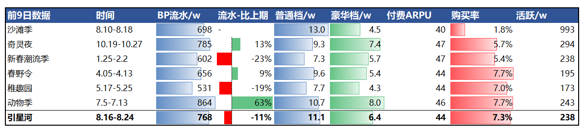
📎 原文：第五十八周周报
📌 mkk: 引星河BP的持续性表现稳健（仅次于两大庆典），但豪华档持续是短板。
W64 原文 — 陇上金颂BP（前9日）
陇上金颂前9日流水￥633w，付费ARPU￥47；购买率7.8%虽较高，但活跃基数下降导致购买人数不多。
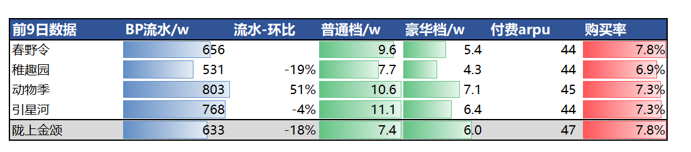
📎 原文：第六十四周周报
📌 mkk: 购买率7.8%已算优秀，但"率高量少"的问题再次出现——活跃基数下降是所有付费指标共同面对的结构性瓶颈。
W69 原文 — 沸雪浴场庆典（前3日）
沸雪浴场前3日流水¥415w（-10%），购买率8.5%正常。触达-参与漏斗数据正常。环比上期陇上金秋庆典数据，主要还是活跃基数下降导致流水下降。
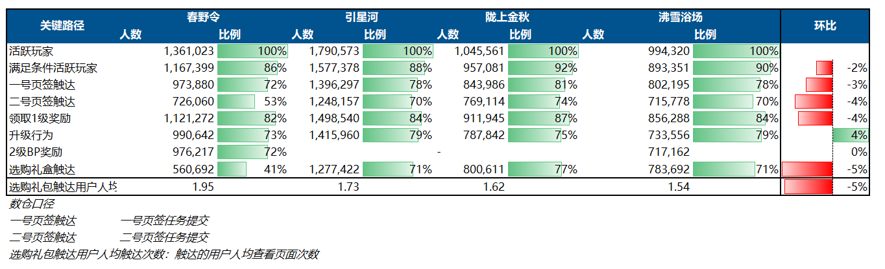
📎 原文：第六十九周周报
📌 mkk: 漏斗正常+购买率正常，-10%的流水下滑完全归因于活跃基数。庆典系列的产品设计已趋稳定，增长瓶颈明确在用户侧而非付费侧。
W70 原文 — 沸雪浴场庆典（前9日）
沸雪浴场前9日流水¥556w（-12%），购买率8.6%。
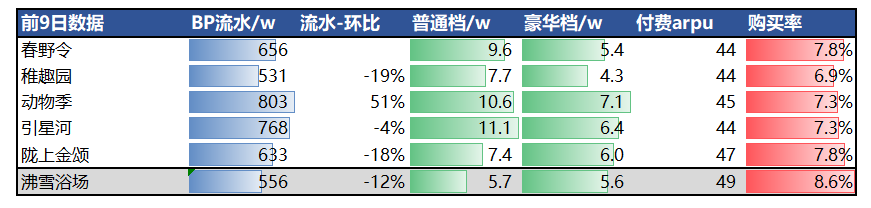
📎 原文：第七十周周报
📌 mkk: 9日购买率8.6%与3日8.5%几乎持平，说明沸雪浴场的后续售卖衰减较快——前3日已集中了大部分购买行为。
W81 原文 — 冰雪季BP
前3日流水560w，其中普通档人数8.4w接近历史最高，付费率8.7%也是较高水平。
但付费ARPU降低至￥44，豪华档的占比在下降。
BP触达情况：本期BP页签触达率降低，可能由于泛玩家回流，正常。但达到2级渗透率降低，目前无合理解释。
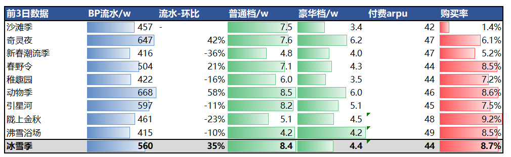
📎 原文：第八十一周周报
📌 mkk: BP和大卡池呈现相同趋势——普通档人数/付费率都接近或创新高，但ARPU和豪华档占比在降。泛玩家回流稀释了付费深度。"2级渗透率降低无合理解释"值得追踪，可能是新回流用户对BP机制不熟悉，或内容吸引力不足以驱动深度参与。
C2. 卡池吸引力演化
追踪范围：W10 → W84 | 当前状态：持续跟踪中
W15 原文（2024.10.21-10.27）
卡池流水下跌至￥194w，本期卡池同样衰减较快。上线5周后，大超R付费率不到20%（一期卡池5周后，大超R付费率仍40%+）。推测与票根兑换规则更改有关
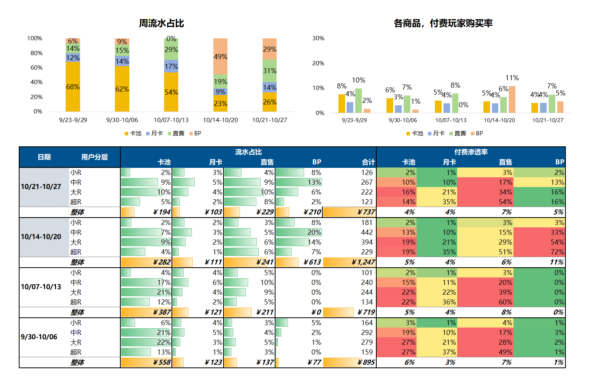
📎 原文：第十五周周报
W16 原文（2024.10.28-11.03）
整体数据：二期卡池b上线前5日流水￥991w，为上期的1/3（二期卡池a流水￥2966w）；其中服装池￥468w，为上期的29%，家居池为523w，为上期的38%
流水不及上期卡池的主因是，活跃人数减少（340w->219w）× 付费率降低（6.5%->4.3%）= 卡池付费人数减少（22w->9w，为上期的42%）
付费分层数据：本期卡池付费率降低的群体主要是中R用户，付费率仅为上期卡池的1/3；60抽以上占比来看，大超R下降幅度很大，说明卡池整体吸引力不足
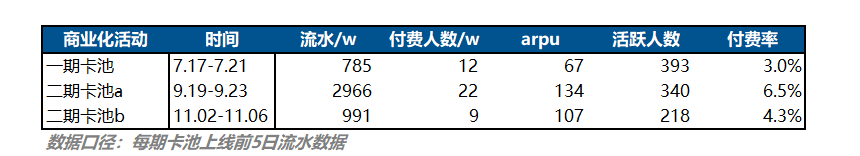
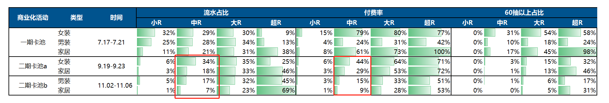
📎 原文：第十六周周报
W17 原文（2024.11.04-11.10）
二期卡池b周流水￥517w（￥850w->￥517w；衰减40%，速度慢于二期a）
整体付费率13%（-1%），其中大R 53%→44%，超R 65%→55%
整体付费ARPU￥101→￥76
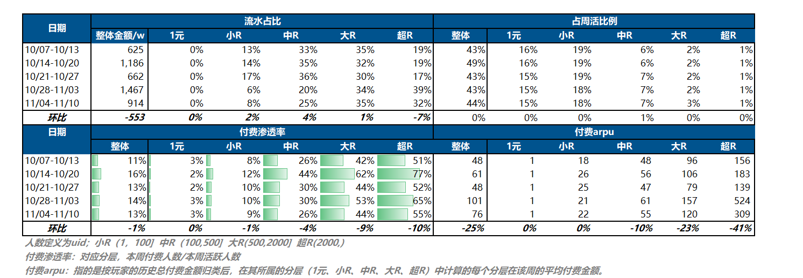
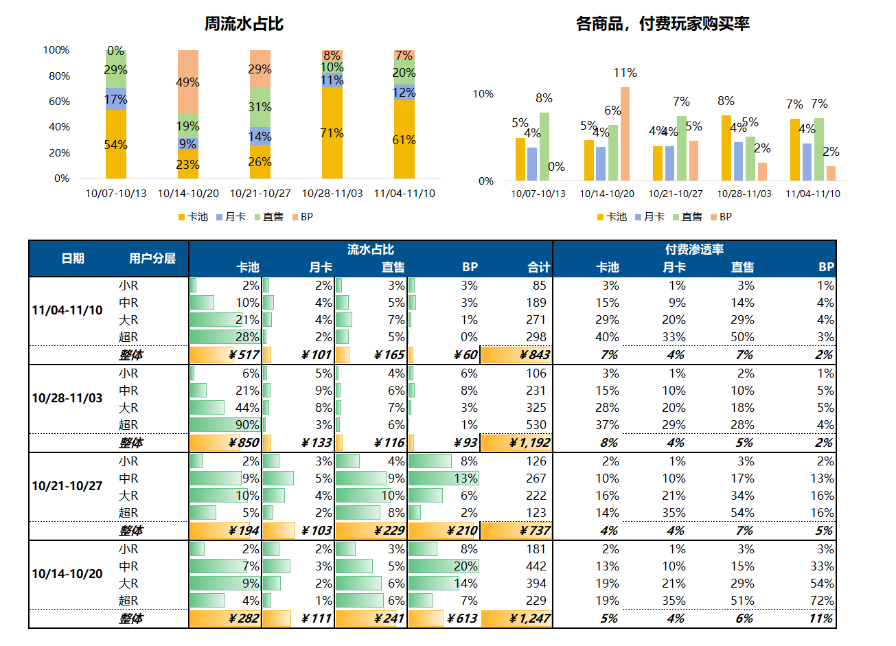
📎 原文：第十七周周报
W18 原文（2024.11.11-11.17）
卡池流水衰减至￥326w（￥517w->￥326w，衰减37%）
卡池付费率大R衰减较快；各付费分层付费率均为新低
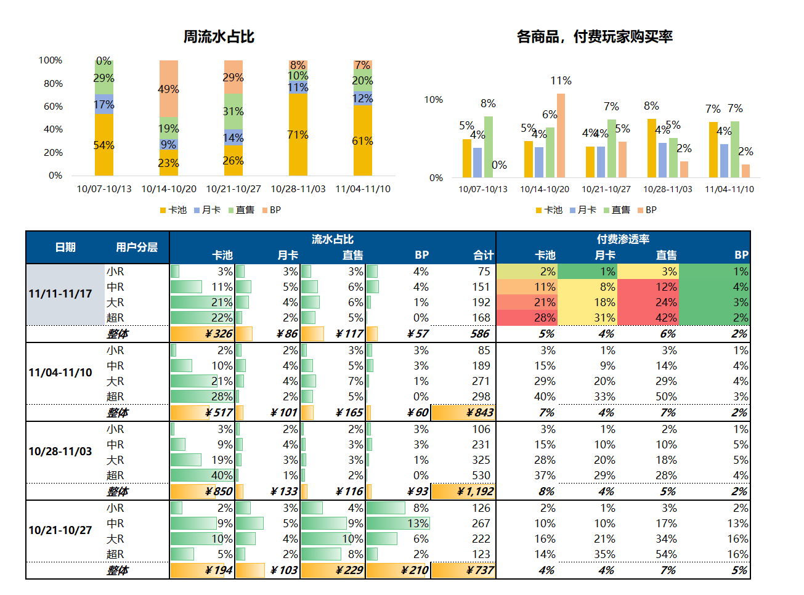
📎 原文：第十八周周报
W22 原文（2024.12.09-12.15）— 小狗联动卡池
小狗不放回前 3 日流水 ¥738w，与二期 b 持平；参与人数 29w，付费率（17%）远高于大卡池（6%）
付费玩家参与率 28%（二期 8%~14%）；各档位尤其是中小R 付费率明显更高
小狗 ARPU 较低仅 ¥25（大卡池服装 ¥70~85，家具 ¥114），仍有提升空间
卡池参与玩家中 6% 拿到大奖载具，2w 人近乎贡献 400w 流水；拉风必胜载具直售 2000 人购买，付费率较低，流水 ¥52w
玩家更偏爱小金毛卡池：小金毛 : 马尔济斯的参与人数 27w : 16w（总抽卡人数 29w，即 93% 的玩家都抽了小金毛池）；小金毛 : 马尔济斯平均抽数 2.7 : 1.9，换算成￥平均消费 36 : 20
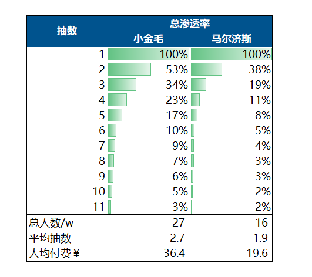
📎 原文：第二十二周周报
W23 原文（2024.12.16-12.22）— 小狗卡池 9 日补充
小狗不放回前 9 日流水 ¥1038w，稍低于二期 b 卡池；参与人数 44w，付费率（19%）高于大卡池（6%）
付费玩家参与率 30%（二期 11%）；各档位尤其是中小R 付费率明显更高
小狗 ARPU 较低仅 ¥23（二期 b 卡池 ¥107），仍有提升空间
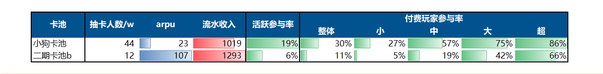
📎 原文：第二十三周周报
W27 原文 — 春节卡池三期上线
周流水 ¥2212w（+536%），周付费 ARPPU ¥134 为历史最高。
卡池前 4 日心钻流水接近二期 a，ARPU ¥179 大幅高于其他卡池（+34% vs 二期 a）；付费率 16% 稍高于二期 a（15%），但因活跃缩减（329w→181w，-45%）导致付费人数不如二期 a。
分池表现：女装 12% / 男装 9% / 家具 5%，家具 ARPU ¥244 远高于以往。拉新付费率 1.4% 与二期 a 持平，新付费 ARPU ¥34（+¥4）；20-30 抽玩家中 86% 未购买折扣礼包。
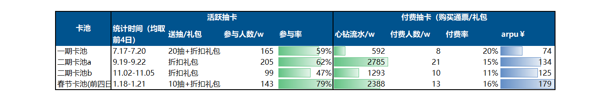
📎 原文：第二十七周周报
W28-29 原文 — 春节三周总览
春节三周总心钻流水 ¥6361w，周均 ¥2120w，仅次于二期 a。
付费率 20% 创新高，ARPPU ¥166 创新高（超 R 平均 ¥562）；大卡池流水 ¥3888w，因送抽带动参与率 74% 创新高。
不放回前 7 日 ¥1362w 高于小狗，ARPPU ¥91（+¥36）；蓝钻卡池参与率 51%（+4pp），但人均消耗 415 蓝钻（-365），主要因蓝钻存量下降。
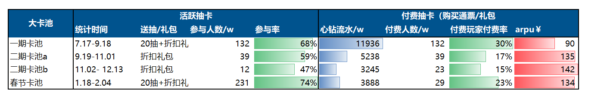
📎 原文：第二十八&九周周报
W30 原文 — 节后衰减
节后卡池流水回落至 ¥789w，占总流水 69%，仍是主要收入来源。
周付费率 18%（-7pp）虽有回落，但仍持平春节前两周；ARPPU 回落至 ¥64。
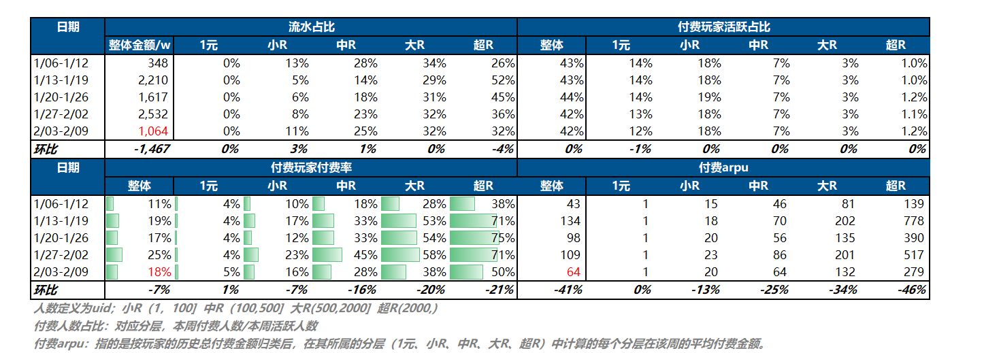
📎 原文：第三十周周报
📌 mkk 评语
小狗联动是完全不同于传统服装卡池的品类验证：低 ARPU(¥23-25 vs 大卡池 ¥70-107) 但高渗透(付费率 17-19% vs 6%)，走的是"薄利多销"路线。93% 抽卡玩家选了小金毛，IP 品类偏好极其集中。9 日累计 ¥1038w 与二期 b 持平，证明"宠物"品类与传统服装可以并驾齐驱，且中小R 拉动效果远好于服装卡池。
春节卡池三期则证明"送抽机制"可显著提升参与率(74%)，且ARPPU¥166说明核心付费深度仍有空间。回顾卡池全线演化：二期ab衰退源于"风格同质化+规则变更"，月光卡池用免费货币做消耗出口，小狗走"低ARPU高渗透"，春节用"送抽+节日加成"创新高——卡池吸引力的关键变量从"风格"转向"机制设计+时机"。
W36-37 原文 — 糖果不放回卡池 & 蓝钻卡池
糖果卡池前12日流水 ¥713w（小狗 ¥966w，春节 ¥1035w），付费率和付费人数相近。蓝钻卡池流水和人均消耗蓝钻数量低，但参与率较高。
📎 原文：第三十六&三十七周周报
📌 mkk: 糖果卡池流水是小狗的74%、春节的69%，在"付费率和人数相近"的前提下说明ARPPU走低——可能是IP吸引力差异。蓝钻卡池"高参与低流水"说明它更像免费玩家的消耗出口而非氪金入口，设计定位需明确。
W38 原文 — 奶油大卡池（前5日）
大卡池前5日流水 ¥1525w（二期a ¥2966w，二期b ¥1366w，春节 ¥2556w）。总体表现与二期b接近，女装和家具池尚可，男装池较差。本期家具池ARPU ¥139 较高，仅次于春节，但付费率 3.0% 较低；女装池ARPU ¥80、付费率 5.3% 持平春节；男装池仅 ¥68（二期b中性池 ¥110，新春 ¥97），付费率仅 1.8%。
📎 原文：第三十八周周报
📌 mkk: 大卡池延续"家具高ARPU低参与、女装均衡、男装拖后腿"的规律。男装ARPU只有春节39%、付费率1.8%，说明男性向内容的付费转化是结构性短板。家具池的高ARPU+低付费率组合暗示付费门槛过高或内容仅吸引核心建造玩家。
W39 原文 — 奶油大卡池（前12日）
大卡池前12日流水 ¥1825w（二期a ¥3734w，二期b ¥1736w，春节 ¥4135w），总流水与二期b接近。家具池活跃ARPU ¥3.7，相当于新春的 56%，持平二期；女装ARPU值 ¥3.7，相当于春节的 61%，低于二期；男装池ARPU ¥1.1，相当于春节的 39%，表现较差。
📎 原文：第三十九周周报
📌 mkk: 12日数据确认与5日趋势一致——总量锚定在二期b水平，距春节有明显差距。整体卡池吸引力在下行通道中，后续新卡池的IP/内容力度需要有突破性变化才能扭转趋势。
W41-42 原文 — 不放回卡池
前5日总流水 ￥568w（上期糖果 ￥460w）。其中女装流水较高 ￥407w 接近春节，付费率 6.9% 和ARPU ￥33 均较高；但男装池售卖情况较差，流水仅 ￥161w，活跃付费率 3.8%
📎 原文：第四十一&四十二周周报
📌 mkk: 女装池表现优秀接近春节水平，但男女装差距悬殊（2.5倍），男装池缺乏足够吸引力。五一假期泛用户回流带来的付费率提升主要被女装捕获。
W46 原文 — 游乐园大卡池（前5日）
游乐园大卡池前5日总流水 ￥2462w，持平春节，各细分卡池付费率均为历史新高。本期服装付费率高于春节，深度稍低于春节，其中男装深度持平春节，流水也仅次于二期b中性池。本期家具卡池付费率 4.8%，ARPU值 ￥160 均为历史新高
📎 原文：第四十六周周报
📌 mkk: 游乐园主题大卡池全面打平春节是里程碑式成绩——特别是家具池的历史新高，说明建造玩法深度已形成稳定的付费转化渠道。端午假期的时机选择也恰到好处。
W47 原文 — 游乐园大卡池（前12日）
整体：游乐园大卡池前12日总流水 ￥3365w；女装活跃ARPU仅次于春节，男装和家具池均为历史最高
女装池：付费率 6.7%（春节 6.4%），但深度稍低，付费ARPU ￥76 相当于春节的 81%
男装池：付费率 3.9%（春节 3.1%），付费ARPU ￥90 持平春节，流水也接近春节
家具池：付费率 5.1%（春节 4.5%），付费深度较高，ARPU值 ￥155 为历史新高
📎 原文：第四十七周周报
📌 mkk: 大卡池12日总流水3365w全面超越预期。值得注意的趋势：男装池付费率上升（3.1%→3.9%）可能反映用户群体结构变化或男装品质提升；家具池持续创新高印证了建造生态的变现潜力。女装"广度高但深度浅"的特征值得关注——是否到达了付费深度天花板？
W48 原文 — 不放回卡池（前5日）
整体流水：前5日总流水 ￥673w，其中女装池 ￥556w 仅次于小狗
付费率：女装池活跃付费率达到了 9.8% 历史新高，男装池 4.7% 尚可
付费深度：女装池ARPU达到 ￥37，其中全套获得的用户占比 9.6%，仅次于春节和小狗；但男装池的付费ARPU仅 ￥16，全套占比 3.2% 也是历史新低
📎 原文：第四十八周周报
📌 mkk: 女装池创下9.8%付费率新高的同时，男装池ARPU和全套率双创新低，两极分化加剧。男装设计方向可能需要复盘——是审美偏好问题还是搭配价值不足？
W52 原文 — 小马宝莉卡池首日速报
小马宝莉卡池7.17上线，6-12h流水共 1021w，付费人数 9.2w，均为历史新高
📎 原文：第五十二周周报
📌 mkk: 6小时破千万是小镇商业化的里程碑。小马宝莉IP的号召力远超自有IP，联动卡池的首日表现直接验证了IP合作的ROI。
W53 原文 — 小马宝莉卡池（前5日）
小马宝莉卡池前5日流水 ￥2421w，活跃付费率达 11.8%，付费ARPU ￥76
小马宝莉抽卡参与率 77%；抽到车子的玩家占 13%，拿到最终大奖的共 1.1w，占比 0.5%
日流水 ￥1894w 为新高（卡池二a ￥1624w，春节 ￥1450w）
卡池流水￥3210w
📎 原文：第五十三周周报
📌 mkk: 11.8%的活跃付费率是断层式领先（对比游乐园大卡池前5日的最好表现也不过个位数），IP联名的付费率提升效果是自有内容难以企及的。77%的抽卡参与率意味着几乎所有活跃用户都尝试了，但0.5%的最终大奖获取率控制合理，保留了足够的付费深度空间。
W54 原文 — 海洋主题大卡池
7.26日上线海洋主题卡池，前5日流水 2007w 尚可。付费人数 21.4w，仅次于卡池二a；活跃付费率 8.6%，仅次于游乐园卡池。付费ARPU ￥94 仅高于一期卡池。
本期海洋主题各细分卡池付费ARPU值均较低，其中女装仅 ￥44。猜测主要是近期卡池付费项较密集的缘故。
本周心钻流水84%来自于卡池
📎 原文：第五十四周周报
📌 mkk: 2007w表现尚可但ARPU全面偏低，紧跟小马宝莉卡池上线导致用户付费预算被前期消耗。84%的卡池收入占比也说明当前商业模式高度依赖卡池节奏，非卡池收入来源亟需拓展。
W57 原文 — 魔术师时装周（卡池+直售结合）
卡池-直售结合形式：玩家花费2元抽一次兑换货币，获得2-30个不固定数量货币；然后使用货币兑换得到服装资产。前5日卡池总流水较高¥651w，付费率较高，ARPU一般；全套占比低但核心部件获得率高。
兑换偏好：玩家偏好女池的发带和发型，男池的衣服、发型和眼罩。
📎 原文：第五十七周周报
📌 mkk: 卡池+直售结合形式的首次尝试，高付费率+低ARPU说明轻度付费用户愿意尝鲜，但深度消费不足。核心部件高获得率意味着"精准购买"倾向强——全套设计对收入拉动有限。
W58 原文 — 魔术师卡池追踪
卡池流水¥1002w，占比61%，其中魔术师卡池¥260w。
📎 原文：第五十八周周报
📌 mkk: 魔术师卡池后半周衰减较快，本周仅贡献¥260w。
W60 原文 — 不放回卡池（9月）
本期不放回卡池售卖情况好，前5日流水¥765w，仅次于春节和小狗。女池付费率10.8%，男池8.7%均为历史最高。
不放回双卡池9.4日上线，回流人数5w，当日DAU回升至73w（环比+23%）。

📎 原文：第六十周周报
📌 mkk: 不放回机制的稀缺性溢价在开学后的低活跃期格外有效——男女池付费率同创历史新高，说明核心付费群体对稀缺内容仍有强烈响应。回流+23%的拉力也验证了"不放回"作为回流抓手的有效性。
W62 原文 — 黄油小熊不放回卡池
黄油小熊不放回卡池前5日流水¥959w，主要是女池付费率较高，流水¥699w。
📎 原文：第六十二周周报
📌 mkk: 黄油小熊IP联动效果强劲，¥959w的前5日流水在非节假日期间表现突出。女池¥699w占比73%，性别偏好极其明显——联动IP的女性吸引力是流水核心驱动力。
W63 原文 — 镜与花大卡池（前2日）
镜与花大卡池前2日流水¥1501w，对比前3次卡池属于中等水平。从付费率看，女装池7.1%，家具池5.2%，均高于往期；主要是基础活跃下降导致付费人数减少，总流水不如游乐园和海洋主题卡池。
周流水¥2993w；付费率32%；付费ARPU¥128（仅次于春节¥134）。74%流水来源于卡池。
📎 原文：第六十三周周报
📌 mkk: 付费率和ARPU双双高位是积极信号——说明留存下来的用户付费意愿和深度都在提升。但"活跃基数下降导致总流水不如往期"的结构性矛盾持续存在：率高量少的困境。ARPU¥128逼近春节峰值，用户钱包深度已接近天花板。
W64 原文 — 镜与花大卡池（前5日）
镜与花大卡池前5日流水￥2786w，仅次于2a卡池。女装池付费率10.7%显著高于往期，付费ARPU值￥83；总流水￥1203w远高于近几期。男装池付费率4.1%高于往期，但实际付费人数5.5w与近几期持平，付费ARPU值￥61偏低。家具池付费率6.8%高于往期，付费ARPU值￥136较高。
📎 原文：第六十四周周报
📌 mkk: 镜与花成为近期最成功的大卡池之一。女装池10.7%付费率+¥1203w流水是突出亮点，说明主题审美精准命中了目标用户。家具池ARPU¥136最高但付费率低于女装——高客单价、低渗透的品类特征一贯。
W65 原文 — 镜与花大卡池（前16日）+ 卡池资产偏好
镜与花大卡池前16日流水￥3899w，稍低于第二期a和第三期新春卡池。大卡池付费率有持续走高的趋势，主要是卡池付费用户群沉淀富集。
女装池中，玩家偏爱核心部件头发和裙子，驻留率高于同档位部件；珍稀和普通档位没有突出的部件。男装池中，玩家偏爱核心部件礼袍，普通档位中偏爱"绯红垂耳"。家具池中，玩家明显偏爱核心部件植物建材"紫藤"（建议谨慎考虑植物建材负载计算相关事宜），普通档位中偏爱玻璃地面。

📎 原文：第六十五周周报
📌 mkk: ¥3899w的16日流水说明镜与花生命周期表现稳健。"付费率走高因用户群沉淀"是重要趋势洞察——活跃用户越来越"纯"，付费浓度提升但总盘缩小。资产偏好数据非常有价值：紫藤建材的高驻留率+负载考量是一个产品决策交叉点。
W66 原文 — 迷途幽声不放回卡池（前5日）
迷途幽声大卡池前5日流水￥592w，流水一般。女池：男池约2:1，属于正常比例。卡池付费率较高，女装池9.5%，男装池5.6%；付费ARPU较高，而且均衡：女装池￥35，男装池￥29；男女装的全套比例也都较高。但受活跃基数低的影响，总流水一般。
📎 原文：第六十六周周报
📌 mkk: 付费率高+ARPU均衡+全套比例高——产品本身的吸引力完全没问题，单纯是活跃基数的天花板限制了总量。"率好量差"已成为开学后每期卡池的固定叙事。
W71 原文 — 甄嬛联动不放回卡池
本期甄嬛不放回卡池售卖情况差，前5日总流水318w，女装池5.8%均为历次最低。全套占比分别为12.2%和14.2%，基本为历次最高。推测跟资产可搭配性相关。
本期甄嬛蓝钻卡池消耗总蓝钻较高，参与率较高，充值流水一般，前5日158w，全套率较高，女装全套率4.2%。
📎 原文：第七十一周周报
📌 mkk: 甄嬛不放回卡池表现全面疲软——付费率历次最低但全套率历次最高，说明付费意愿低但付费的人抽得更深。资产搭配性差（跟已有风格不融合）可能是核心阻力。
W72 原文 — 大卡池8极地圣歌
11.29上线冰雪主题大卡池，前5日总流水中等水平￥1932w。
女装池流水新低仅￥534w，付费率7.5%正常，但付费ARPU￥64较低，缺乏强吸引力的单品。
男装池流水新高￥588w，付费率6.1%新高，付费ARPU￥86高；玩家反馈喜好头发，眼眶，衣服，裤子等单品，且色系与卡池6的海洋主题容易搭配。
家具卡池流水￥809w偏低，付费率5.9%正常，但付费ARPU￥123深度偏低。有玩家反馈说本期卡池建材的色系较独立，难以与往期搭配；玩家提到较多的单品有屋顶，植被建材，留声机，钢琴，基本都不是卡池的核心部件。
📎 原文：第七十二周周报
📌 mkk: 极地圣歌大卡池揭示了一个清晰规律：资产的"搭配兼容性"直接决定付费深度。男装池因色系可与卡池6海洋主题混搭而创新高，女装池和家具池因风格独立而遇冷。家具池最有意思——玩家最喜欢的是留声机、钢琴等非核心部件，说明家具池的核心建材吸引力不足。
W78 原文 — 冰原守卫者不放回卡池
1.8日（周四）上新不放回卡池冰原守卫者，周流水￥578w。
本期不放回卡池心钻流水仅181w。
抽卡券总流水2455w，但心钻购买抽卡券的占比仅占7%，本期卡池受到了福利送抽的影响较大。
拆分付费分层来看，大超R的人均付费和付费率都有所降低。
尽管本期抽卡在福利加成下，付费玩家的全套率接近10%。但本期的女装池全收集用户数的复购率降低，表明不差钱的全收集用户对本期资产的获取意愿有所下降。
📎 原文：第七十八周周报
📌 mkk: 冰原守卫者暴露了福利送抽的双刃剑效应——抽卡券总流水¥2455w看似可观，但心钻真实付费仅占7%。送抽稀释了真实购买力，且冰雪主题与大卡池8重复，全收集用户复购率下降说明连核心鲸鱼也审美疲劳了。
W81 原文 — 森铃大卡池
森铃大卡池上线前5日总流水3171w，高于历史所有卡池。
女装池流水1558w，主要是付费率12.2%历史最高。ARPPU ￥75中规中矩。
男装池446w，相比历史男装池一般。付费率6.9%也是历史最高，但ARPPU￥38也是历史最低。
家具池流水1167w，流水较高，付费率7.8%历史最高，但ARPPU￥88也是历史最低。
📎 原文：第八十一周周报
📌 mkk: 森铃大卡池全面刷新付费率历史记录，¥3171w创历史最高。但有一个结构性变化值得注意——各池付费率均创新高，但ARPPU均偏低甚至历史最低（男装¥38、家具¥88）。这意味着"更多人愿意花一点钱"但"单个人花的不多"——广度提升但深度下降。
W83-84 原文 — 喜羊羊卡池
2.14日上新喜羊羊卡池，前5日总流水约1200w，流水最高的是美羊羊卡池。
喜羊羊总体流水一般，但前5日消耗抽卡券达7500w（小马宝莉3500w）。原因是受补偿通票影响，抽卡券流水中真实心钻流水比例较低。
📎 原文：第八十三&八十四周周报
📌 mkk: 喜羊羊卡池的数据需要脱水看——¥1200w流水看似尚可，但抽卡券消耗¥7500w(2倍于小马宝莉)意味着大量消耗来自补偿通票而非真实付费。补偿带来的"虚假繁荣"会透支后续卡池的消费力，需要关注通票存量消化完后的真实付费回归水平。
C3. 直售 & 每周精选
追踪范围：W4 → W32 | 当前状态：持续跟踪中
W4 原文（2024.08.05-08.11）
七夕和BP分R售卖情况
自行车：￥663w（占商城总消耗65％），42w人付费（3辆自行车人数未去重），付费渗透率总体达14％左右。
收入占比：直售贡献31％，收入￥1011w（+123％）
分R用户付费渗透率：本周，付费渗透率最高的付费项从 卡池 转移到 直售，其中，直售小R付费渗透率平均提升8％，中大超R付费渗透率平均提升27％
📎 原文：第四周周报
W7 原文（2024.08.26-09.01）
每周精选分R售卖情况
泳装：售卖流水￥169w（占商城总消耗42％），12w人付费；付费渗透率总体达5％左右
七夕自行车：售卖流水￥663w（占商城总消耗66％），42w人付费（3辆自行车人数未去重），付费渗透率总体达14％左右
📎 原文：第七周周报
W14 原文（2024.10.14-10.20）
商城付费分层数据：中大超R对于虎虎雨衣系列的付费率更高；对于怪奇派对家具系列的付费率低，但是ARPU明显高于虎虎雨衣
BP流水收入￥613w，占比周总流水的49%
商城更新 怪奇派对 和 每周精选，商城周流水￥241w，占比19%。其中每周精选-虎虎雨衣贡献￥47w流水，商城直售-怪奇派对贡献￥93w流水
📎 原文：第十四周周报
W15 原文（2024.10.21-10.27）
鼠鼠雨衣和虎虎雨衣为同档位商品，但虎虎直售流水68w，仅为鼠鼠雨衣188w的1/3左右，且流水衰减极快，活动寿命仅3天，猜测受到了同期怪奇派对和BP的影响，建议避免同时上多个活动
怪奇派对家居直售的大R和超R流水总和占比近80%，家居类直售群体主要是大超R
📎 原文：第十五周周报
W18 原文（2024.11.11-11.17）
每日精选的服装系列付费数据明显好于家居系列，原因是家居系列太廉价，10元礼包拿所有
树莓+蓝莓家居周流水仅20w
📎 原文：第十八周周报
W19 原文（2024.11.18-11.24）
跨品类购买度：衣服精选的跨品类购买度较低，即衣服精选的用户不购买家居精选；家居精选的跨品类购买度较高，即购买家居的用户大部分之前也购买了衣服精选，是同一批人
分R画像：每周精选购买群体的主力军是中R和大R。中R留存率约30%，每周流动性强，但用户基数大；大超R付费留存率较高，无其他付费项时，基本属于每周顺手购买
本周直售表现较差，总计流水仅￥74w；周流水￥429w（-28%）新低，整体付费率9%（-1%），各付费分层付费率均为新低
📎 原文：第十九周周报
W22 原文（2024.12.09-12.15）— 小狗直售
小狗家具售卖情况一般，流水 ¥93w。本身高定价加上售卖是家具，因此付费率较低
📎 原文：第二十二周周报
W23 原文（2024.12.16-12.22）— 圣诞直售 & 对比
本周直售流水 ¥323w，为 10 月以来新高，占比总流水 40%
圣诞直售：女装售卖较好，流水占比 40%；散件中售卖较好的也是女装的"冬青礼服"
直售项目对比：圣诞直售在单价远高于其他服装的情况下，付费率依然达到 1.9%，总流水仅次于鼠鼠雨衣
小狗家具 9 日总流水 ¥125w，总流水尚可，但付费率较低
拉风载具 9 日总流水 ¥63w，总流水尚可，但付费人数较少
拉风必胜载具：前 9 日流水中，金色载具"暴走族"贡献 44% 流水，粉色载具贡献 34% 流水
📎 原文：第二十三周周报
W28-29 原文 — 春节直售 & 月卡联动
春节三周直售 ¥720w（其中蓝钻直售 ¥287w），占总流水约 10%。
蓝钻卡池上线后，月卡周流水上涨至 ¥125w（+¥61w，+87%），购买率 2.8%（+87%）；周礼包流水上涨至 ¥106w（+¥59w，+103%），购买率同为 2.8%（+103%）。
蓝钻消耗机制有效拉动了月卡 / 周礼包的交叉销售。
📎 原文：第二十八&九周周报
📌 mkk 评语（W22-W23 + W28-29 直售）
圣诞直售是继七夕自行车之后的第二个"直售爆发"案例：¥323w 占总流水 40%，10 月以来最高。核心验证了"高单价 + 女装 + 节日主题"依然能撑住付费率(1.9%)。小狗家具 9 日 ¥125w 说明联动 IP 家具有一定购买力，但付费率低于服装品类。载具品类（拉风必胜 ¥63w）延续了"金色 > 粉色"的颜色偏好规律（44% vs 34%），与 W1 奶咖色/金色载具表现一致。
W31 原文 — 情人节直售 & 赠礼功能
情人节直售流水¥228w，付费人数5.7w，付费率4.4%。赠礼功能上线以来（1.23），载具 ¥40w + 月卡/BP ¥80w，赠礼总流水 120w。载具赠送较多的是情人节活动返场的自行车（单价¥12）；商品赠送较多的是月卡和BP。
📎 原文：第三十一周周报
📌 mkk: 情人节直售¥228w占周流水24%，是非卡池收入的有力补充。赠礼功能¥120w看似不多，但它开创了社交驱动消费的新路径——月卡/BP是赠礼主力说明玩家更愿意送"有用的东西"而非装饰。自行车因低单价成赠礼热门，暗示赠礼场景对价格敏感。
W32 原文 — 情人节直售更新 & 赠礼Bug
情人节直售（数据更新至2.23日）流水¥291w，付费人数 5.7w，付费率 3.1%。回退自行车刷礼盒bug：玩家可以通过给小号购买自行车，再退回转化成心钻的方式刷包装礼盒，造成商城流水统计偏高。本周有玩家在社媒上传播，刷的次数较多。目前已经剔除这部分数据。每周精选流水较低，仅 6w。
📎 原文：第三十二周周报
📌 mkk: 情人节直售累计¥291w算中等偏上的直售表现。赠礼刷礼盒bug是典型的"社交功能开放后的套利漏洞"——自行车低单价+可退回+礼盒奖励形成了闭环。虽然已剔除数据，但暴露了赠礼退回机制的风控缺失。每周精选仅¥6w说明常规直售吸引力不足。
C5. 月光卡池（水晶卡池）
追踪范围：W20 → W48 | 当前状态：持续跟踪中
W20 原文（2024.11.25-12.01）
概览：卡池参与度良好。前两日参与人数 44w，参与率 29%（首日 47%）；人均卡池消耗月光水晶 764 个，前两日卡池流水收入 ¥218w
产销情况：活跃玩家水晶存量得到消耗。卡池前两日参与用户水晶存量 3.5 亿，人均 800。卡池前两日人均卡池消耗 764 个，补充 100 个。目前存量 6000w，人均存量 136 个。
流水情况：水晶卡池也带来月卡、月卡礼包和水晶直购的流水提升，其中水晶直购 200w，月卡礼包 28w
📎 原文：第二十周周报
📌 mkk 评语
月光卡池通过"消耗囤积水晶 → 制造稀缺 → 诱导充值"的链条间接拉动付费。W20 前 2 日参与率 29%，将水晶存量从 3.5 亿消耗至 6000w(-83%)，直接流水 ¥218w。
W21 原文（2024.12.02-12.08）
概览：卡池整体参与度高。参与人数 71w，参与率 47%；人均卡池消耗月光水晶 686 个；卡池流水收入共 ¥295w（其中首日 176w）
蓝钻产销情况：参与卡池玩家水晶存量得到消耗。本次参与卡池的 71w 用户，原蓝钻存量 5 亿，人均存量 700；现蓝钻存量 1.1 亿，人均存量 150
按原存量区间：
- 参与率：2000+ 高蓝钻存量玩家卡池参与率 54%，未明显高于大盘，各蓝钻存量区间的本次卡池参与率接近
- 消耗比：中低蓝钻存量玩家消耗比例更高，消耗更彻底，参与意愿更强；而高蓝钻存量玩家仍持有部分蓝钻未消耗
按付费/免费拆分：
- 参与率：免费玩家参与率较低（35%）。由于玩家未提前准备，只有部分免费玩家依靠肝活跃攒了足够多的蓝钻
- 消耗比：参与的免费与付费玩家人均蓝钻消耗差距不大，建议优化蓝钻售卖机制，提升付费玩家蓝钻消费情况
卡池深度与出货：整体参与深度符合预期
📎 原文：第二十一周周报
📌 mkk 评语（W20-W21 合并）
W21 的完整数据补充了 W20 的前 2 日快照：参与率从 29%(W20 前 2 日) 升至 47%(W21 全周)，流水 ¥295w，蓝钻存量从 5 亿消耗至 1.1 亿(-78%)。设计回应了 W5-W9 发现的"免费货币持续贬值"问题，为经济系统提供了大规模消耗出口。
关键发现：各蓝钻存量区间参与率接近(~50%)，但中低存量玩家消耗更彻底——说明高存量玩家"舍不得花"，未来可考虑分层激励。免费玩家参与率仅 35%，存在蓝钻获取门槛。
W41-42 原文 — 蓝钻卡池
本期蓝钻卡池前5日参与率 54%，蓝钻流水 2.9亿。除人均消耗深度稍低以外（猜测主要是因为假期泛玩家回流，参与深度低），其他相比往期均正常

📎 原文：第四十一&四十二周周报
📌 mkk: 假期回流的"广度提升、深度摊薄"现象——参与率正常但人均消耗低，说明泛用户虽被拉回但付费意愿有限。
W48 原文 — 蓝钻卡池（友晴学院）
整体：本期友晴学院蓝钻卡池前5日消耗蓝钻 5.2亿 历史新高。人均消耗 537 蓝钻（仅次于首期蓝钻卡池），参与率63%（仅次于绵绵假日）
直购蓝钻：本期直购蓝钻流水不高，仅 189w
📎 原文：第四十八周周报
📌 mkk: 蓝钻消耗创新高但直购流水仅189w，玩家主要在消耗存量蓝钻而非购买新蓝钻。需要关注蓝钻经济是否健康——如果存量持续被消耗但产出/购买不足，后续蓝钻卡池的变现能力会下降。
C17. 肝氪活动（大富翁/联动）
追踪范围：W62 → W74 | 当前状态：持续跟踪中
W62 原文 — 黄油小熊大富翁活动
活动形式：玩家获得骰子→投掷骰子获得代币→代币兑换资产。

📎 原文：第六十二周周报
📌 mkk: 黄油小熊活动开创了"肝氪大富翁"付费形态——玩法层面参与门槛低（免费骰子），付费层面提供进阶深度。后续甄嬛活动复用了此框架。
W65 原文 — 黄油小熊活动复盘
活动参与率78%，高于小蓝61%和奶茶鼠41%。其中12%的玩家付费参与，8.6%的玩家购买了付费进阶bp，几乎都拿到了心钻返还。
付费流水¥452w，介于小蓝¥341w和奶茶鼠¥728w之间，其中¥340w是用户购买进阶的流水。本期付费进阶性价比极高，几乎能拿全部资产，且返还了180心钻。
小熊返钻流向：共返钻332w，占该玩家分群期间总获得心钻的6%；期间心钻产销平衡，没有囤积；87%的心钻流水消耗在卡池中。

📎 原文：第六十五周周报
📌 mkk: 黄油小熊是典型的"高参与低利润"活动——78%参与率是三次活动中最高的，但进阶性价比过高导致流水低于奶茶鼠。真正的亮点在于：①返钻没有造成囤积，87%流向卡池，形成了完整的消费闭环；②进阶BP是有效的"首充引导"工具。
W65 原文 — 小熊进阶破冰效应
小熊进阶刺激6000+免费玩家破冰，他们国庆期间总消费81w，其中72%是卡池流水，人均付费￥94。
📎 原文：第六十五周周报
📌 mkk: 破冰玩家的后续消费以卡池为主(72%)，说明一旦跨过首充门槛，卡池就成为最大的消费场景。¥94的人均也意味着这批用户不只是尝鲜——他们成为了有持续消费能力的轻付费用户。
W71 原文 — 甄嬛肝氪活动
活动形式：肝/氪获得骰子 -> 大富翁走格子获得代币 -> 代币购买资产。与黄油小熊不同点：付费进阶到达50/10抽等进度时，不直接赠送资产，统一给代币。
参与率：甄嬛活动参与率基本持平黄油小熊和小蓝。
参与漏斗：甄嬛活动漏斗获得和消耗骰子渗透率持平黄油小熊，但兑换资产占比17%低于黄油小熊的24%；进阶付费率8%持平，但代币付费率5%低于黄油小熊的10%。
本期甄嬛前4日付费流水200w，低于黄油小熊的251w；原因是：1.进阶购买率持平（7.6% ≈ 7.8%），但活跃基数降低（113w < 123w）；2.付费骰子购买率降低（5.0% < 9.7%）。
📎 原文：第七十一周周报
📌 mkk: 甄嬛肝氪活动改为"统一给代币"的间接兑换设计看似更灵活，但兑换资产转化率(17%)显著低于黄油小熊的直接赠送模式(24%)。代币付费率5%仅为黄油的一半(10%)——增加一层间接性反而提高了心理摩擦。另外活跃基数从123w降至113w也是流水缩水的结构性原因。
W72 原文 — 甄嬛肝氪活动（前9日更新）
本期甄嬛不放回卡池售卖情况差，数据更新至前9日，总流水414w。
参与漏斗：甄嬛活动漏斗获得和消耗骰子渗透率持平黄油小熊，但兑换资产占比9%低于黄油小熊的19%；进阶付费率7.8%稍低于黄油小熊的9.2%，但代币付费率5.3%显著低于黄油小熊的9.7%。
本期甄嬛前9日付费流水262w，低于黄油小熊的336w。
📎 原文：第七十二周周报
📌 mkk: 9日数据进一步印证趋势——兑换资产占比从前5日的17%跌至9%，说明后期付费转化持续恶化。代币付费率5.3%仍仅为黄油的一半。甄嬛联动在IP热度层面没问题（参与率持平），但在商业化层面全面逊于黄油小熊。
W74 原文 — 甄嬛肝氪活动（前23日结算）
更新甄嬛前23日（共35日）与黄油小熊（共23日）等活动数据。
甄嬛活跃参与率与黄油小熊持平；甄嬛付费购买骰子5.6%低于黄油小熊8.2%；付费进阶BP购买率8.4%基本持平。
甄嬛由于活动周期更久，目前心钻返还率进度6.2%低于黄油小熊。
收入数据：前23日甄嬛流水371w，低于黄油小熊的452w。
📎 原文：第七十四周周报
📌 mkk: 甄嬛联动肝氪活动最终结算——活动期更长(35天vs23天)但流水更低(¥371w vs ¥452w)，ROI明显不如黄油小熊。拉长活动周期并没有带来更多付费，反而稀释了紧迫感。骰子付费率5.6% vs 8.2%是核心差距，说明IP对付费转化的拉动力有质的差异。